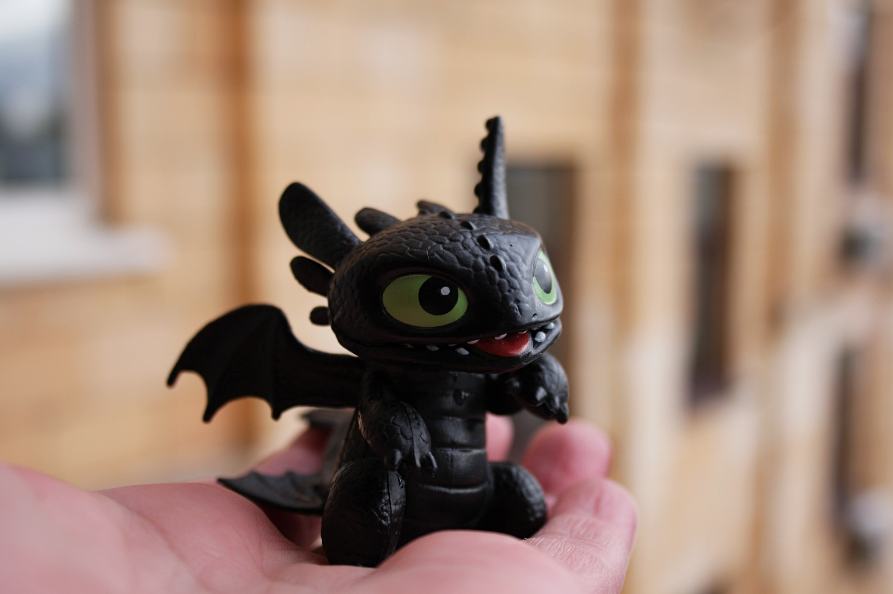

Den här sidan handlar om draktränaren. Draktränaren är en film där det är en kille som är en viking och hans släkt dödar drakar. Men han tycker inte om att döda drakar så han försöker tämja en drake. Han lyckades rida på draken och låten som spelas då är den låten som är till vänster om sidan. Där kan man också se en bild på draken han flög.